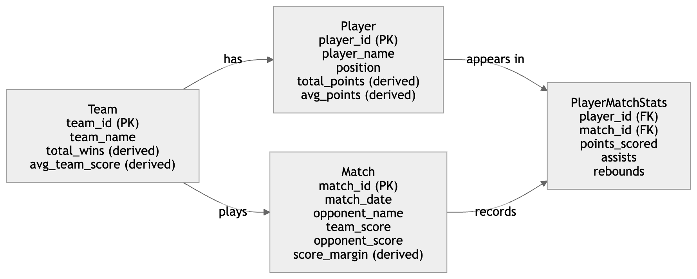
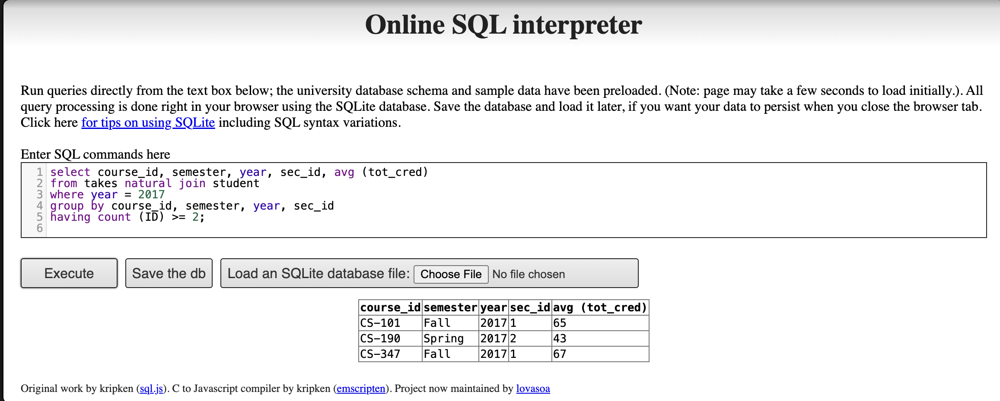
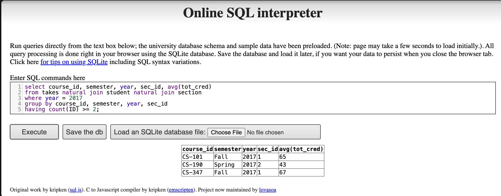
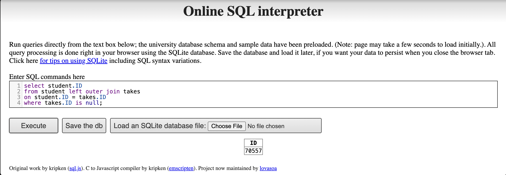

Assignment 4
1. Difference between a weak and a strong entity set
A strong entity set has its own primary key, which means that each entity can be uniquely identified by its own attributes. It exists independently of other entity sets.
A weak entity set, in contrast, does not have a complete primary key of its own. It cannot be uniquely identified using only its own attributes. Instead, it must be identified through a combination of its partial key and the primary key of a related strong entity set. A weak entity also depends on the strong entity for its existence.
Example
Consider the entities Building and ApartmentUnit.
- Building is a strong entity set because each building can be uniquely identified by a key such as
building_id. - ApartmentUnit is a weak entity set because a unit number such as
101is not unique by itself. Different buildings may each have a unit101.
Therefore, an apartment unit is uniquely identified by combining:
building_idunit_no
In this example, unit_no is a partial key, and ApartmentUnit depends on Building for unique identification.
Summary
The key difference is that a strong entity set has an independent primary key, while a weak entity set must rely on a related strong entity set together with a partial key in order to be uniquely identified.
2. E-R diagram for scoring statistics of a favorite sports team
2(a) Favorite sports team
Design idea
To keep track of the scoring statistics of a favorite sports team, the database should store:
the matches played the score in each match the players who appeared in each match each player’s scoring statistics in each match
A suitable E-R design includes the following entities:
Entities
Team
team_id (primary key) team_name total_wins (derived) avg_team_score (derived)
Player
player_id (primary key) player_name position total_points (derived) avg_points (derived)
Match
match_id (primary key) match_date opponent_name team_score opponent_score score_margin (derived)
PlayerMatchStats
player_id (foreign key) match_id (foreign key) points_scored assists rebounds Relationships One Team has many Players One Team plays many Matches One Player can appear in many Matches One Match includes many Players The many-to-many relationship between Player and Match is represented by PlayerMatchStats Derived attributes and how they are computed
For Team
total_wins = count of matches where team_score > opponent_score avg_team_score = average of team_score across all matches played
For Player
total_points = sum of points_scored across all matches played by the player avg_points = average of points_scored across all matches played by the player
For Match
score_margin = team_score - opponent_score
Diagram for 2(a)

3(a)(i)
- Explain why appending natural join section in the from clause would not change the result
Appending natural join section would not change the result because the query already gets all necessary attributes from takes and student. The relation section shares the attributes course_id, sec_id, semester, and year with takes, so the natural join only matches each tuple in takes with the corresponding tuple in section.
However, the query does not use any attributes unique to section, such as building, room_number, or time_slot_id. Therefore, adding natural join section does not affect the select, where, group by, or having clauses, and the final result remains unchanged.
3(a)(ii) Test result
First query result:

Second query result:

3(b)
This query uses a left outer join from student to takes on ID. The left outer join keeps all students, including those who do not have any matching row in takes. For students who have never taken a course, the attributes from takes will be NULL. Therefore, the condition where takes.ID is null returns exactly the IDs of students who have never taken a course at the university.
The result of the query in the online SQL interpreter is shown below.
